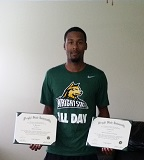

Desiree' Williams
 We design our program plan to focus on developing clients for emerging occupational clusters Greene County
and the surrounding areas. We hypothesized that the plans of the majority of the clients might include vocational training,
apprenticeships, and/or support with job placement. Based on our caseload and interaction with the clients we have we have
discovered: a number of the clients demonstrate an aptitude and desire for pursuing career fields.
Click to listen to what Desiree shares with WCSU
We design our program plan to focus on developing clients for emerging occupational clusters Greene County
and the surrounding areas. We hypothesized that the plans of the majority of the clients might include vocational training,
apprenticeships, and/or support with job placement. Based on our caseload and interaction with the clients we have we have
discovered: a number of the clients demonstrate an aptitude and desire for pursuing career fields.
Click to listen to what Desiree shares with WCSU
My Why???
Sometimes, in order to tell a story, a person must live the story. I am that person. Having traveled the road from poverty as a young mother, to now having much more, years later. I understand how difficult this transition can be.
My Challenge
When I was a young single parent, I faced many common challenges such as trying to figure out how to stay encouraged, maintain my home, feed my family, navigate systems, and cover the cost of all my expenses. I faced all of this while at the same time, learning how to manage time and family, work a job, and manage my education and training. Even with strong family support, at times, the obstacles seemed to be so big and my journey was still very challenging. I had occasional opportunities, but I still needed much more.
During my tougher times, I would often dream of what it would be like if I had someone who could coach me both personally and professionally, connect me with the right resources and people, to help me gain time by knowing some of the pitfalls to avoid, and inspire me to get to the point where I could consistently "hold my own", add value to the community, and pay it forward.
For this reason, I knew it was my purpose to continue on by making that dream a reality. Therefore, Dreams of Millions, Inc. was launched. This dream is to help advance individuals toward the next level of success is now being realized. Before many can have true success, they must be conditioned for higher expectations. This current economy is tough, but I know that when others reach higher levels of achievement, especially in the workforce, families and communities are stronger. Both socially and economically, stronger families and communities lead to a stronger nation. Please support the dream and efforts to continue to advance others and improve the workforce by donating to us today. Your support really does make the difference!